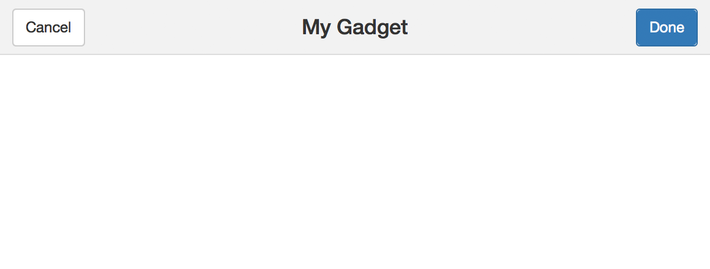
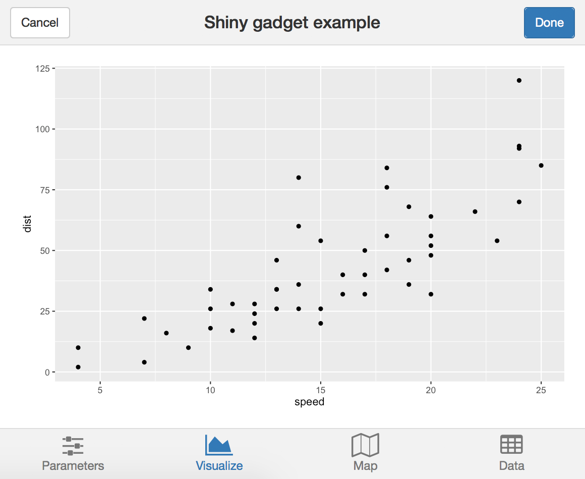

Designing Gadget UI
Shiny 0.13 introduces the concept of Shiny Gadgets, which are Shiny apps that are designed to be used directly from the R console (or invoked as an RStudio Add-in) to provide helpful functionality while you’re analyzing data or coding.
While technically, any kind of Shiny UI could be used for a Shiny Gadget, we’ve created a miniUI package that we think is particularly well suited for Gadget use. We recommend that you start with miniUI based UI for your gadget, unless you have a specific reason not to.
You can install miniUI from GitHub using the devtools package:
devtools::install_github("rstudio/miniUI")miniUI is inspired by the excellent Ratchet CSS library for mobile web apps.
miniPage
Each miniUI interface starts with miniPage. miniPage is fundamentally different than the traditional shiny::fluidPage in that miniPage tries to exactly fill its containing browser window or frame. Other than setting up an empty container, miniPage does nothing but display its children; it has no visible UI of its own.
miniPage(..., title = NULL, theme = NULL)
Unfortunately, you can’t put just any UI object directly inside a miniPage. This is because miniPage is a special kind of container called a “flex box”; any of its direct children need to be aware of that and include some extra CSS properties to indicate how they’re supposed to interact with the flex box. In practice, the only UI objects you’re likely to put directly inside miniPage are:
gadgetTitleBar/miniTitleBarminiTabstripPanelminiButtonBlockminiContentPanel
(miniContentPanel is especially important, as it is capable of hosting non-flex-aware UI objects. Think of it as a bridge between the flex box style layout, and every other kind of UI object. We’ll go into more detail about miniContentPanel shortly.)
gadgetTitleBar
Almost every Gadget will want to use gadgetTitleBar as the first child of miniPage. It adds a header that displays the name of the gadget, plus “Cancel” and “Done” buttons.
gadgetTitleBar(title, left = miniTitleBarCancelButton(),
right = miniTitleBarButton(“done”, “Done”, primary = TRUE))

As noted in the example above, you need to handle input$done, but Cancel is handled automatically by runGadget.
You can customize or omit the Cancel and Done buttons by passing left and right arguments to gadgetTitleBar. For example, to replace the text “Done” with “Accept”:
gadgetTitleBar("My Gadget",
right = miniTitleBarButton("done", "Accept", primary = TRUE)
)(There’s also miniTitleBar, which is the same as gadgetTitleBar but it omits the Cancel and Done buttons by default. It’s mostly useful if you want to use miniUI for a regular Shiny app, not a Gadget.)
miniContentPanel
As we noted earlier, think of miniContentPanel as the “bridge” between the strange flex box layout that miniPage creates, and normal HTML elements and controls that aren’t flex box aware.
miniContentPanel(..., padding = 15, scrollable = TRUE)
Most simply, you can put a plot inside of miniContentPanel:
miniContentPanel(
plotOutput("plot", height = "100%")
)We specify a height of 100% because the default is a fixed 400 pixels. That will technically work, but having the 100% height means the plot will exactly fill the space allocated to the miniContentPanel, which is much nicer.
What if you have two plots? This doesn’t work:
# Don't do this!
miniContentPanel(
plotOutput("plot1", height = "100%")
plotOutput("plot2", height = "100%")
)You end up with a scrollable mess, exactly what we were trying to avoid. You could set each height to 50%, and that would probably work. But a more robust and general solution is available in the form of fillRow/fillCol, explained below.
Not every miniContentPanel needs to have children that scale up to fill it. You can put other types of HTML content in miniContentPanel, such as a fixed-height plot, a regular paragraph or two of text, or a table of data. By default, if a miniContentPanel’s contents are bigger than its own dimensions, it will display horizontal and/or vertical scrollbars. You can choose never to display scrollbars with the argument scrollable=FALSE.
By default, miniContentPanel adds some whitespace padding around its content. You can modify the amount of padding with the padding argument; set padding = 0 to eliminate the padding altogether, or set specific pixel values for the individual sides with padding = c(top, right, bottom, left).
miniTabstripPanel
Shiny’s tabsetPanel is extremely useful for giving your app multiple screens. It isn’t suited to small window sizes, though; its tabs take up too much space. Enter miniTabstripPanel, which is coded in a similar way, but has a much different appearance.
miniTabstripPanel(..., id = NULL, selected = NULL, between = NULL) miniTabPanel(title, ..., value = title, icon = NULL)

ui <- miniPage(
gadgetTitleBar("Shiny gadget example"),
miniTabstripPanel(
miniTabPanel("Parameters", icon = icon("sliders"),
miniContentPanel(
sliderInput("year", "Year", 1978, 2010, c(2000, 2010), sep = "")
)
),
miniTabPanel("Visualize", icon = icon("area-chart"),
miniContentPanel(
plotOutput("cars", height = "100%")
)
),
miniTabPanel("Map", icon = icon("map-o"),
miniContentPanel(padding = 0,
leafletOutput("map", height = "100%")
),
miniButtonBlock(
actionButton("resetMap", "Reset")
)
),
miniTabPanel("Data", icon = icon("table"),
miniContentPanel(
DT::dataTableOutput("table")
)
)
)
)(See the full example at https://github.com/rstudio/miniUI/blob/master/examples/tabs.R)
The main difference between using miniTabstripPanel/miniTabPanel and tabsetPanel/tabPanel is that the former requires you to provide an icon for every tab, and you’ll generally need to wrap the tab contents in miniContentPanel. Anything that works as a direct child of miniPage also works as a direct child of miniTabPanel, e.g. miniButtonBlock; all other UI elements need to be wrapped in miniContentPanel.
fillRow/fillCol
These two functions are not in the miniUI package, but in the core shiny package itself. They are useful for dividing an area up into rows and columns that grow and shrink proportionally to fill the available space, as opposed to fluidRow and col which don’t grow and shrink vertically.
fillRow(..., flex = 1, width = "100%", height = "100%") fillCol(..., flex = 1, width = "100%", height = "100%")
When called with child elements and no other arguments, fillRow and fillCol will divide the available space (horizontally and vertically, respectively) evenly.
fillRow(a, b, c)
| a | b | c |
fillCol(a, b)
| a |
| b |
Note that while fillRow/fillCol will create containers for its children that fill the available space, just like miniContentPanel it can’t force the child elements to actually fully use that space. Again, plotOutput needs a height = "100%" argument, otherwise it will fix its height at 400 pixels, and the same is true for most HTML widgets.
You can nest fillRow and fillCol within each other to create more complicated layouts:
fillRow(
fillCol(a, b),
fillCol(c, d, e)
)| a | c |
| d | |
| b | |
| e | |
Controlling weights with flex
When the simple “divide available space evenly between children” behavior is not enough, you can pass a flex argument to fillRow/fillCol to have more control.
The flex argument should be a numeric vector that contains one element for each child you pass to fillRow/fillCol. The values you pass will determine how the available space will be apportioned. A child with a flex value of 2 will get twice as much space as a child with flex value 1:
fillRow(flex = c(1, 2), a, b)
| a | b |
You can also assign a child element the flex value of NA; this means, use the natural size of the element. If a fillRow/fillCol contains one or more NA flex values, then space will be assigned to those children first, and the remaining space will then be divided among the children with non-NA flex values.
The NA flex value feature is particularly valuable when used with fillCol to park a fixed-height input (like a slider) above or below a plot (or two) that fills the rest of the space. When the gadget is resized, the slider keeps the same height while the plots scale, as shown in the animation below.
fillCol(flex = c(NA, 1),
slider,
fillRow(a, b)
)| slider | |
| a | b |
Learn more
For more on this topic, see the following resources: